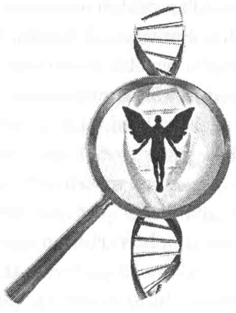

Lee Carroll

Yazan: Lee Carroll
Ben, Kryon’un ilk kanalı (medyumu) ve Yeni Çağın bir yazarı ve konuşmacısı olan Lee Carroll’um. Size bunu söylüyorum, çünkü onun perdenin öbür tarafındaki güzel bir enerji tarafından aktarılan ezoterik bir bilgiyi içerdiğinin farkında olarak bu kitabı aldığınızı varsayıyorum. Bu da, bu kitapta yer alan hemen hemen tüm bilginin bilimsel bir incelemeden değil, metafiziksel bir kaynaktan geldiği anlamına gelmektedir.
Ben Moskova, Kudüs, Santiago, Karakas, Paris, Cenevre, Bogota, Riga, Sao Paulo gibi egzotik yerlerdeki toplantı salonlarında binlerce katılımcının karşısında Kryon’a kanallık ederek dünyayı dolaşıyorum; işim beni, asla göremeyeceğimi düşünmüş olduğum bölgelere götürüyor. Yirmi bir yıl boyunca ve diğer kitaplarla birlikte Kryon’un mesajlarını sundum ve şimdi bu kitaplar tüm dünyada yirmi dört dile çevrilmiş bulunuyor. 1989’dan beri, bu sevgi dolu varlıktan gelen kişisel muktedirlik ve spiritüel rehberlik mesajlarını aktarıyorum ve New York’daki Birleşmiş Milletler bünyesinde yer alan Aydınlanma ve Dönüşüm Topluluğu’na yedi kere davet edildim ve orada Kryon’un mesajlarına kanallık ettim. Ancak, bu çalışmada şimdiye dek, öğrenilmesi bu kadar uzun bir zaman alacak ve bütün bir kitabı kaplayacak tek bir konu hiç olmamıştı.
2003’te, Kryon, kendi başına bir kitap oluşturacak özel bir konuyu açıklayacağıyla ilgili işaretler vermeye başladı. O sırada, bu konuyu sunabilmek için İbranice sözcükler öğrenmem ya da numerolojiyi araştırmam gerekeceğini hiç düşünmedim. Ama bu açıkça plânın bir parçasıydı. Kryon, bedenlerimizdeki DNA enerjisinin ardındaki tam ezoterik anlamları bana açıklamaya başladı. Onun belleğime kazınması ve yazılıp incelenmesi için de bu açıklamayı uzun bir zaman boyunca dikkatle yaptı.
DNA’mızda incelenecek toplam on iki enerji ya da tabaka bulunmaktadır ve her birinin bir İbranice ismi vardır. Bu İbranice isimler aynı zamanda “Tanrı’nın isimleri”dir. Bunu daha da ezoterik kılacak bir biçimde, her bir tabakanın ayrıca numerolojik bir enerjisi ve on ikilik bu gruptaki diğerleriyle karmaşık bir etkileşimi vardır. Bu şu anlama geliyordu ki, bana, DNA tabakalarının sadece bir “liste”si değil, ona göre inşa edildiğimiz bir “sistem,” bir kutsallık ve amaç sistemi, kapsamlı bir sevgi ve uygunluk mesajıyla bizi adeta şoke edecek bir sistem ifşa edilecekti.
Sizin bu kitabı okuyup da evrendeki muhteşem yerinizin farkına varmamanız mümkün değildir. Kitabı bitirip elinizden bıraktığınızda, derin bir nefes alıp şöyle düşünebilirsiniz: “Eğer bu kitapta yazılanların hepsi doğruysa, o zaman ben gerçekten de Tanrı’nın evrensel bir plânının bir parçasıyım!” O zaman doğru bir bildirimde bulunmuş olacaksınız, çünkü bu kitap gerçekten de bununla ilgilidir.
En sonunda, DNA’nın her bir tabakası, kendisiyle ilgili uygun öğretiyle birlikte sunulmuş olacaktır. Bu kitaptan gerçekten bir şey elde etmek için, onu, on iki tabakanın bir incelemesi olarak değil, “Tanrı’nın parçaları’nı bu dünyaya her nasılsa yerleştiren ve sonra onlardan “öykünün geriye kalanı’nı keşfetmelerini isteyen muazzam bir sistemin bir incelemesi olarak görmelisiniz. Tanrı’nın o parçaları bizleriz! Bu doğru olabilir mi? Eğer doğruysa, siz bu bilgiyle ne yapacaksınız?
Bu kitabı, sadece, bildiğiniz şeyler listesine yeni bir şeyler eklemek için okumayın. Bu kitabı, kendinizle ilgili olarak keşfedeceğiniz çok daha fazla şeyin bulunduğu fikriyle okuyun. Sonra, kendini-keşifle birlikte genellikle büyük bir değişimin ve birçok soru’nun geldiğini de hatırlayın.
Bu girişten sonraki birinci bölümde, bu bilginin ve enerjinin neden zihnimizin mantığına görünmez olduğu ve özellikle onu neden gözlerimizle göremediğimiz anlatılacaktır. Hepimiz bu günlerde, bilimin de kabul ve tasdik etmeye başladığı şey ile “noktaları birleştirme”ye başlıyoruz. Bilim bizim ezoterik noktalarımızı kanıtlamaya başlamıyor; o daha çok, bizim ezoterik bilgimizi serebileceğimiz bilimsel bir yatak sağlamaya başlıyor, ki bu bize, daha önce birçok kişinin gözünde “garip” olan fikirlerimizi şimdi “realite olasılığı’na yükseltme iznini veriyor. Basitçe koyarsak, bilimsel olgu bu ezoterik bilgiyle bir kavşakta birleşmeye başlıyor. Spiritualite ve bilim, bir gün, onları ayırmanın gerçekten zor olacağı kadar çok benzer hale gelebilirler.
İkinci bölümde, bu incelemenin geçmişini anlatacak ve buna isteyerek ya da istemeyerek katılanlardan söz edeceğim; böylece, İbranice’nin ve numerolojinin bir kısmının nereden geldiğini ve bazı şeylerin neden öyle düzenlendiklerini anlayabileceksiniz.
Üçüncü bölümde, DNA’nın yapısını anlatacak ve geçmişte “mantıksız” görünen, ama giderek çok daha mantıklı hale gelen şeyleri açıklayacağım. Bu bölüm, “çöp DNA”yı, onun aslında ne olduğu ve neden öyle isimlendirildiği ile ilgili son bilgileri de içerecektir.
Kendi yazdığım bölümler içinde en sevdiğim bölüm olan dördüncü bölümün başlığı, “Hiç Kimsenin Üzerinde Düşünmediği Şeyler”dir. Gözlerimizin önünde, mantıksal düşünüşe karşı koyan şeyler bulunmaktadır; ancak, biz onlarla hiç ilgilenmeden yaşayıp gider, onların temsil ettiği ikiye-bölünüşe asla bakmayız! Bu bölümde, Kryon’un öğretisinin ardındaki dayanak olan bazı ezoterik bilgileri de sunacağım. DNA’nızda neyin bulunduğuyla ilgili bu incelemeye başlayabilmeniz için, geçmişte dünyada bununla ilgili olarak neyin vuku bulduğunu bilmeniz gerekiyor. Çünkü Kryon’un DNA’mızla ilgili olarak listelediği şeylerin çoğu tarihîdir ve yüz bin yıllık bir süreçteki “kimliğimiz”i içermektedir. Bu birkaç kısma ayrılan büyük bir bölüm olacaktır.
“Öğreti Başlıyor” başlıklı beşinci bölümde, Kryon’un bizim DNA’yı nasıl görmemizi ve dikkate almamızı istediğinden söz edeceğim. O bölümde, ayrıca, temel numerolojiyi de anlatacağım ve bu bazılarının düşünebileceğinden çok daha kapsamlı bir konudur. Çok-boyutlu bir konudur ve ben bu bilime mümkün olduğunca eksiksiz bir giriş yapmaya çalışacağım.
Sonra esas öğreti başlayacak ve Kryon, İnsan DNA’sının tabakalarını, onların isimlerini, enerjilerini, amaçlarını ve “içimizdeki üstatlığın” kaydedilmiş-plânını anlatacak.
Bu kitabı okurken, DNA tabakalarıyla ilgili asıl tanımlamaların ve öğretinin kitabın büyük bölümünü oluşturmadığını göreceksiniz. Bu kasten böyle yapılmıştır, çünkü bu kitap size metafıziksel dolabınızda saklayacağınız bir başka şeyler- listesi sunmak için yazılmamıştır. Onun yerine, ben, DNA’nın aslında ne olabileceğini ve onun bizim için gerçekte ne anlam ifade ettiğini derinlemesine anlamanızı sağlamaya çalışacağım. DNA tabakalarını anlattığı bölümlerde, Kryon, sık sık başka konulardan, bazı öykülerden, hatta dünya-dışı varlıkların niteliklerinden söz edecek! Böylece, bu en azından canlı bir anlatım olacak.
Ardından, Kryon’un, DNA’nın aktifleştirilmesini, İnsanın bilimsel eğilimini ve genel olarak çok-boyutlu varoluşu anlattığı dört canlı celse yer alacak. Bu mesajlar bu kitabın yazılışının son aylarında verildiler ve bu ezoterik öğretinin pratik uygulanışlarına odaklanmanın mükemmel bir yolunu sunuyorlar.
Bazen kitapta, özellikle canlı celselerde bazı bilgiler tekrarlanmaktadır. Onları okuyup geçebilirsiniz, çünkü canlı celselerdeki mesajlar bu kitaptaki bilgiden bağımsız olarak verilmişlerdir; bu yüzden, kitapta “çöp” DNA’nın bizim spirituali- temizin gerçek enerjisi olduğuyla ilgili birkaç açıklama yer almaktadır. Bu paragrafları kitaptan çıkarmak, canlı celsenin deneyiminin enerjisini azaltmak olurdu. Zaten ben, kişisel olarak, bu bilgiyi ne kadar işitsek azdır diye düşünüyorum.
Şu noktaya dikkatinizi çekmek istiyorum: Tüm bu kitap boyunca, Kryon ve ben, kuantum sözcüğü ile çok-boyutlu sözcüğünü birbirinin yerini tutabilir biçimde kullanıyoruz. Kuantum sözcüğü, gerçek fizikte, bir aktarım sürecindeki en küçük madde ya da enerji birimi anlamına gelir. Bu sözcük, Latince ne kadar anlamına gelen “kuantus” sözcüğünden gelir. Ancak, biz bu sözcüğü, gerçek fizik terminolojisi yerine, insanların bugün işittikleri gibi, popüler konuşma dilinde kullanıldığı anlamda kullanıyoruz. Dolayısıyla, “kuantum bir hal,” bu kitapta “çok-boyutlu bir hal” anlamına gelmektedir. Belki de bu terimin bu popüler anlamı edinmesinin nedeni, fiziğin büyük bölümünün saf, deneysel bir haldeki şeylerden söz etmesidir. Ancak, kuantum mekaniği teorisi bize, “rastgele” bir halde, hatta bazılarının “kaos” dedikleri bir halde bulunuyor görünen şeylerin anlayışının başlangıcını vermiştir. Bu rastgelelik ya da “ola- sılığa-dayanan realite,” sadece, bizim onu algılayış biçimimiz olabilir ve o -henüz sahip olmadığımız ya da anlamadığımız yeni fizik yasalarının standartlarıyla- hiç de rastgele olmayabilir.
Bu kitapta son olarak, üzerinde düşünmeniz için bazı güncel olaylardan söz edeceğim. İnsanın yaptığı organ nakillerine Ruh’un tepkisinin ne olduğunu düşünüyorsunuz? Eğer bir kişinin DNA’sı kesinlikle benzersizse ve o kişinin Akaşik Kaydını içeriyorsa, bir organ nakli spiritüel olarak uygun bir şey midir? Organ nakli yapılmalı mıdır? Ya nakil yapılmadığı takdirde o kişi ölecekse? Bu bölümde bu konuda çok güzel sağduyu yanıtları bulacaksınız.
Sonra, “insan-yapımı yaşamın yaratılması’ndan, 2010’da tümüyle laboratuarda yaratılan çok küçük DNA molekülünden söz edeceğim. Bu yaratım uygun mudur? Bizi etkiler mi? Onun tüm sonuçları nelerdir? Yine, bu güncel konuyla ilgili sorulara da sağduyulu, ancak bazılarının karşı çıkabilecekleri yanıtlar sunulacaktır.
Kitabın en sonunda, DNA tabakalarının, ressam Elan Dubro-Cohen’in medyumik olarak alıp resmettiği güzel renkli illüstrasyonları yer almaktadır. Onlar bu kitaba gerçekten güzel bir katkıda bulunmaktadır!
Bu giriş bölümünü şu olguyu vurgulayarak bitirmek istiyorum: Bu kitap çeşitli şekillerde kopyalanacak ve onlara farklı isimler verilecek; ona eklentiler yapılacak; üzerinde çalışılıp değiştirilecek; hatta belki bazıları onu, diğer kitaplarımıza da yaptıkları gibi, çeşitli iftiralarla suçlayacaklar.
Ama böyle olmasaydı, eğlence nerede olacaktı?